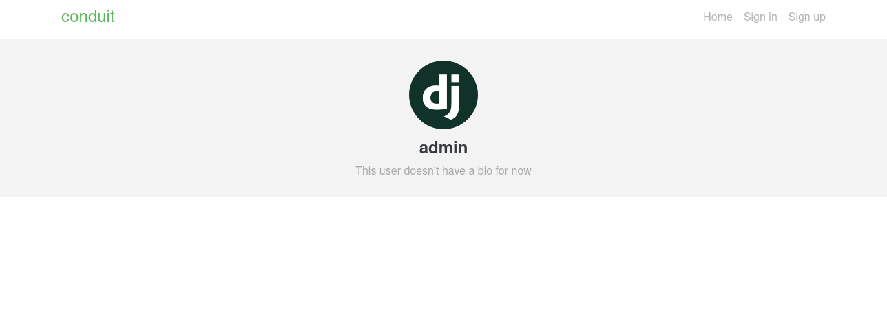
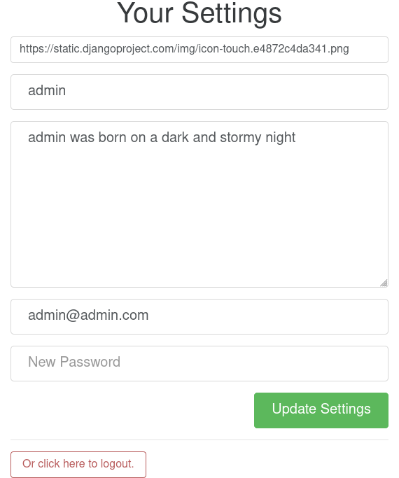
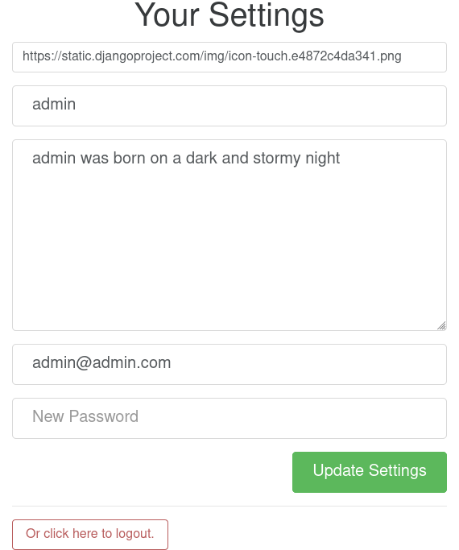

Django tutorial
Table of Contents
- 1. Introduction
- 2. Pre-requisites
- 3. Virtual environment
- 4. Git
- 5. Creating a project
- 6. Article model
- 7. Lists of Articles
- 8. Article views, templates, etc.
- 9. Navbar
- 10. Creating, editing, and deleting Articles
- 11. Comments
- 12. Users and Profiles
- 12.1. Introduction
- 12.2. User model
- 12.3. Profile model
- 12.4. Auth views
- 12.5. Auth urls
- 12.6. Auth templates
- 12.7. Nav
- 12.8. LoginRequiredMixin
- 12.9. Only allow authors to edit or delete their articles and comments
- 12.10. Testing signup and login
- 12.11. Viewing Profiles
- 12.12. Viewing Articles written by each User
- 12.13. Links to Profiles in templates
- 12.14. Editing profiles
- 13. Follows, favorites, and tags
- 14. Observations
:ID: a35b9773-9529-41fd-bbc3-3c2b071047e4
1. Introduction
We’ll build the Thinkster’s Django RealWorld Example App from the ground up. The app is called Conduit and is a Medium clone.
Instead of only building the backend in Django, we’ll do both frontend and backend, to show that SSR is still going strong.
We’ll be following a simplified version of the cookiecutter/cookiecutter-django architecture (made famous by the excellent book Two Scoops of Django 3.x), but you don’t need to have read it to follow.
2. Pre-requisites
-
You should have followed the DjangoGirls tutorial before starting this one: it is excellent for getting you up to speed, and covers most of the introductory material you’ll need, like HTML, CSS, and, of course, Django. We’ll assume you have completed that tutorial and won’t go into the specifics of anything that has already been covered there.
- Python 3.9
- Django 3.2 (or higher)
- conda or virtualenv for virtual environments
- Optional
3. Virtual environment
4. Git
We assume that you know the basics of git. You should git commit at the end of every chapter.
5. Creating a project
5.1. Project layout
We’ll be following the folder structure presented as best practice in Two Scoops of Django, which will yield something like the following:
folder_name ├── config/ │ ├── __init__.py │ ├── asgi.py │ ├── settings/ │ ├── urls.py │ └── wsgi.py ├── project_name/ │ ├── app_1/ │ ├── app_2/ │ ├── static/ │ └── templates/ ├── .gitignore ├── manage.py └── db.sqlite3
Let’s create a folder for our project: we’ll name it django_tutorial.
(django) ~$ mkdir conduit
Let’s create our project conduit
(django) ~$ cd conduit (django) django_tutorial$ django-admin startproject conduit .
Our folder structure looks like this now:
django_tutorial ├── conduit │ ├── asgi.py │ ├── __init__.py │ ├── settings.py │ ├── urls.py │ └── wsgi.py ├── db.sqlite3 └── manage.py
We’ll move all the files in the conduit folder into the django_tutorial/config folder, as we explained above. The project layout should now be:
. ├── conduit │── config │ ├── asgi.py │ ├── __init__.py │ ├── settings.py │ ├── urls.py │ └── wsgi.py └── manage.py
Because we’re deviating from Django’s generic project layout, we’ll have to update some lines.
You might wonder why we have to fiddle with the settings before even starting to code, but this small effort has the benefit of making the structure of our project easier to understand and of separating the config from the code, which is a good rule of thumb.
In asgi.py and wsgi.py:
os.environ.setdefault("DJANGO_SETTINGS_MODULE", "config.settings") # from os.environ.setdefault("DJANGO_SETTINGS_MODULE", "conduit.settings")
In settings.py:
ROOT_URLCONF = "config.urls" # from ROOT_URLCONF = "conduit.urls" WSGI_APPLICATION = "config.wsgi.application" # from WSGI_APPLICATION = "conduit.wsgi.application"
5.2. Database
5.2.1. TODO PostgreSQL
Following the arguments of A Minimalistic Modern Django Boilerplate
5.3. App folder structure
Our app will have a lot of moving parts (articles, profiles, tags, etc.). To keep the structure of our app clear, we’ll host the logic for each of these parts in separate folders.
We’ll build Conduit step by step. The most basic function that the app should have is the ability to post and read articles. Let’s start with that (you’ll notice that this part is basically a repeat of Django Girls tutorial’s blog app).
(django) django_tutorial$ cd conduit (django) conduit$ django-admin startapp articles (django) conduit$ cd articles
Our folder structure now looks like this:
django_tutorial ├── conduit │ ├── articles │ │ ├── admin.py │ │ ├── apps.py │ │ ├── __init__.py │ │ ├── migrations │ │ │ └── __init__.py │ │ ├── models.py │ │ ├── tests.py │ │ └── views.py ├── config │ ├── asgi.py │ ├── __init__.py │ ├── settings.py │ ├── urls.py │ └── wsgi.py ├── db.sqlite3 └── manage.py
We change the name line in the file apps.py in the articles folder:
from django.apps import AppConfig class ArticlesConfig(AppConfig): default_auto_field = 'django.db.models.BigAutoField' name = 'conduit.articles'
We also add the line 'conduit.articles', to INSTALLEDAPPS in settings.py:
INSTALLED_APPS = [ 'django.contrib.admin', 'django.contrib.auth', 'django.contrib.contenttypes', 'django.contrib.sessions', 'django.contrib.messages', 'django.contrib.staticfiles', 'conduit.articles', # add this line ]
5.4. User model
The Django docs warn you: “If you’re starting a new project, it’s highly recommended to set up a custom user model, even if the default User model is sufficient for you. […] Changing AUTHUSERMODEL after you’ve created database tables is significantly more difficult […]. This change can’t be done automatically and requires manually fixing your schema, moving your data from the old user table, and possibly manually reapplying some migrations.”. Scary stuff. Let’s just follow the advice.
First, we need to create the app where we’ll do everything that has to do with users.
(django) conduit$ django-admin startapp users
We then change the name line in the file apps.py in the articles folder:
from django.apps import AppConfig class UsersConfig(AppConfig): default_auto_field = 'django.db.models.BigAutoField' name = 'conduit.users'
Now, in users/models.py, add the following:
from django.contrib.auth.models import AbstractUser from django.db import models class User(AbstractUser): """User model""" pass
What we’re doing here is take the AbstractUser model and save it as is. This way, we can add any modifications we need later on.
In users/models.py we also need to create a Profile model: we’ll explain it in more detail later, but suffice it to say that the Profile will deal with the everything about our users that is not authentication (logging in and out).
class Profile(models.Model): """Profile model""" user = models.OneToOneField(User)
Now, create a superuser in the terminal, so as to be able to access Django’s admin app later on:
(django) django_tutorial$ python manage.py createsuperuser
And one last dark magic trick that you just need to do without asking why (detailed explanations will be provided in a later section, promise): in your terminal, in the django_tutorial folder, run the following commands:
(django) django_tutorial$ python manage.py shell
And once you’re in the IPython shell:
Python 3.9.7 | packaged by conda-forge | (default, Sep 29 2021, 19:20:46) Type 'copyright', 'credits' or 'license' for more information IPython 7.30.1 -- An enhanced Interactive Python. Type '?' for help. In [1]: from conduit.users.models import User, Profile In [2]: user = User.objects.get(username='admin') In [3]: user.profile = Profile.objects.create(user=user)
Finally, we need to tell Django that we’re not using the default User model. In settings.py, add your users app to INSTALLED_APPS and point AUTH_USER_MODEL to it:
# other settings INSTALLED_APPS = [ # other apps 'conduit.users' # new ] AUTH_USER_MODEL = 'users.User' # new
5.5. Create a database
Make the migrations and start the server:
(django) django_tutorial$ python manage.py makemigrations (django) django_tutorial$ python manage.py migrate (django) django_tutorial$ python manage.py runserver
Our app, Conduit, is online!
6. Article model
6.1. Model
We’ll start by making a model for our articles. The articles need a title, a body (the text), a description, an author, and a creation date.
from django.db import models class Article(models.Model): title = models.CharField(db_index=True, max_length=255) description = models.TextField(max_length=2000) body = models.TextField() author = models.ForeignKey( "users.Profile", on_delete=models.CASCADE, related_name="articles", ) created_at = models.DateTimeField(auto_now_add=True) def __str__(self): return self.title def get_absolute_url(self): return reverse("article_detail", kwargs={"pk": self.pk})
The ForeignKey allows us to have multiple articles for every user.
on_delete=models.CASCADE) means that the article will be deleted if the user is deleted.
=related_name“articles”= allows us to access a user’s articles through an articles attribute.
Let’s sync the database again:
(django) django_tutorial$ python manage.py makemigrations (django) django_tutorial$ python manage.py migrate
6.2. Django admin
In order to have something to work with for the rest of the tutorial, we need to create some posts. Because we can’t yet do it through Conduit, we will do so through Django admin.
First, register the Article model in articles/admin.py by adding the following line:
from django.contrib import admin from .models import Article admin.site.register(Article) # new
The server should still be running (otherwise restart it). Log in as the superuser you just created and create 3 articles.
7. Lists of Articles
7.1. Home view
The default view that the unauthenticated user has is the global feed, or the list of all articles.
We add the following line in django_tutorial/conduit/urls.py, so that the project-level urls.py is aware of the urls defined in articles/urls.py:
from django.contrib import admin from django.urls import path, include urlpatterns = [ path('admin/', admin.site.urls), path('', include('conduit.articles.urls')), #new ]
Let’s create a urls.py file in the articles folder, and add the following:
from django.urls import path from . import views urlpatterns = [path("", Home.as_view(), name="home")]
In views.py, we add the following:
from .models import Article class Home(TemplateView): """all published articles""" template_name = "home.html" def get_context_data(self, **kwargs): context = super().get_context_data(**kwargs) context["articles"] = Article.objects.order_by("-created_at") return context
7.2. Templates folder
We need a template now, but before this we need to create a folder for templates and for static files (icons, CSS, etc.).
It’s easier to have all templates in one place, instead of in each separate app, and the same is true for static files. Let’s create the templates and static folders:
(django) conduit$ mkdir templates (django) conduit$ mkdir static
We need to modify settings.py so Django is aware of our project’s architecture.
Let’s define the APPSDIR below BASEDIR first:
BASE_DIR = Path(__file__).resolve().parent.parent APPS_DIR = BASE_DIR / "conduit"
Let’s change the DIRS line in the TEMPLATES section in settings.py like this:
"DIRS": [APPS_DIR / "templates"], # changed from "DIRS": []
Similarly, let’s define the STATIC_ROOT directory below the STATIC line like this:
STATIC_URL = "/static/" STATIC_ROOT = BASE_DIR / "staticfiles" STATICFILES_DIRS = [APPS_DIR / "static"]
7.3. Base template
Let’s create the base template now.
(django) conduit$ touch templates/base.html
This template will contain the following:
<!doctype html> {% load static %} <html lang="en"> <head> <meta charset="utf-8"> <link rel="icon" href="{% static '/icons/favicon.ico' %}"> <meta name="viewport" content="width=device-width, initial-scale=1"> <!-- favicon --> <!-- Thinkster's CSS --> <link rel="stylesheet" href="//demo.productionready.io/main.css"> <!-- icons for later --> <link href="//code.ionicframework.com/ionicons/2.0.1/css/ionicons.min.css" rel="stylesheet" type="text/css"> <!-- fonts --> <link href="//fonts.googleapis.com/css?family=Titillium+Web:700|Source+Serif+Pro:400,700|Merriweather+Sans:400,700|Source+Sans+Pro:400,300,600,700,300italic,400italic,600italic,700italic&display=swap" rel="stylesheet" type="text/css"> {% block title %} <title>Conduit: Django + HTMX</title> {% endblock %} </head> <body> <main> {% block content %} {% endblock %} </main> </body> </html>
We’ll also download the favicon referenced in our template: download the file located at the URL below to conduit/articles/static/icons/favicon.ico:
https://github.com/gothinkster/react-redux-realworld-example-app/blob/master/public/favicon.ico
7.4. Home template
Now we’ll make the home.html template, which for now only needs to display our “global feed”.
Let’s create the template and add the following to it:
{% extends 'base.html' %}
{% block content %}
<div class="home-page">
<div class="banner">
<div class="container">
<h1 class="logo-font">conduit</h1>
<p>A place to share your knowledge.</p>
</div>
</div>
<div class="container page">
<div class="row">
<div class="col-md-9">
{% if articles|length_is:"0" %}
<div class="article-preview">
No articles are here... yet.
</div>
{% else %}
<div>
{% for article in articles %}
<div class="article-preview">
<div class="article-meta">
<div class="info">
<span class="author">
{{ article.author.user.username }}
</span>
<span class="date">
{{ article.created_at|date:"D M d Y" }}
</span>
</div>
</div>
<a href="{{ article.get_absolute_url }}" rel="prefetch" class="preview-link">
<h1>{{ article.title }}</h1>
<p>{{ article.description }}</p>
<span>Read more...</span>
</a>
</div>
{% endfor %}
</div>
{% endif %}
</div>
</div>
</div>
</div>
{% endblock %}
The HTML is adapted from other realworld projects (especially the SvelteKit implementation of the RealWorld app, because Svelte is unexpectedly close to Django’s templating language). Because the HTML is little more than a copy-paste, we won’t explain its structure and classes: suffice it to say that this is required to have something that looks like the actual Realworld app.


It’s starting to look like something, but we can improve the template a bit.
We want to keep our templates as modular as possible, to simplify the structure of our project and make it easier to think about. In this case, we could move the <div class“article-preview”>= to a separate file. Let’s move all the code in the {% for article in articles %} for loop into the file article_preview.html (which we need to create).
In templates/home.html, we change the following lines:
<div class="container page"> <div class="row"> <div class="col-md-9"> {% include 'article_list.html' %} <!-- from {% if articles|length%}...{% end%} --> </div> </div> </div>
Our templates/article_list.html file should look like this:
{% block content %}
{% if articles|length_is:"0" %}
<div class="article-preview">
No articles are here... yet.
</div>
{% else %}
<div>
{% for article in articles %}
{% include 'article_preview.html' %} <!-- from <div class="article-preview">...</div>-->
{% endfor %}
</div>
{% endif %}
{% endblock %}
The templates/article_preview.html file should look like this:
{% block content %}
<div class="article-preview">
<div class="article-meta">
<div class="info">
<span class="author">
{{ article.author.user.username }}
</span>
<span class="date">
{{ article.created_at|date:"D M d Y" }}
</span>
</div>
</div>
<a href="{{ article.get_absolute_url }}" rel="prefetch" class="preview-link">
<h1>{{ article.title }}</h1>
<p>{{ article.description }}</p>
<span>Read more...</span>
</a>
</div>
{% endblock %}
You might wonder why we’re adopting this template structure: it actually comes from the Svelte implementation of the RealWorld app, and, since it makes a lot of sense and avoids us having to reinvent the wheel, we are taking advantage of it.
8. Article views, templates, etc.
8.1. Article view
Next we’ll implement the article view.
We’ll be working with Class-Based Views: the Django Girls tutorial only presents Function-Based Views, which are arguably a more intuitive option, but CBVs are considered to be best practice, at least according to Two Scoops of Django, and simplify a lot of work.
First, we create a view in views.py:
from django.views.generic import TemplateView, DetailView class ArticleDetailView(DetailView): """detail view for individual articles""" model = Article template_name = "article_detail.html"
Then, we modify the articles/urls.py file:
from .views import Home, ArticleDetailView urlpatterns = [ path("", Home.as_view(), name="home"), path("article/<int:pk>", ArticleDetailView.as_view(), name="article_detail"), ]
8.2. Article template
Now, we create the article_detail.html file in our templates folder and add the following to it:
{% extends 'base.html' %}
{% block title %}
<title>{{ article.title }} - Conduit: Django + HTMX</title>
{% endblock %}
{% block content %}
<div class="article-page">
<div class="banner">
<div class="container">
<h1>{{ article.title }}</h1>
<div class="article-meta">
<div class="info">
<span class="author">
{{ article.author.user.username }}
</span>
<span class="date">
{{ article.created_at|date:"D M d Y" }}
</span>
</div>
</div>
</div>
</div>
<div class="container page">
<div class="row article-content">
<div class="col-xs-12">
<div>
{{ article.body|linebreaks }}
</div>
</div>
</div>
</div>
</div>
{% endblock %}
Finally, we modify home.html so that article previews redirect to articles:
... <a href="{{ article.get_absolute_url }}" rel="prefetch" class="preview-link"> <!-- new --> <h1>{{ article.title }}</h1> <p>{{ article.description }}</p> <span>Read more...</span> </a> <!-- new --> ...
Let’s see what it looks like:


8.3. Slugs
We want our article URLs to include slugs, which are easier to read than IDs.
We want the slugs to be unique, but some articles might have the same titles, which would generate the same slugs. One solution to this problem is to combine slugs with UUIDs.
8.3.1. Defining a slug and a UUID in the model
First, we need to modify our Article model to include a slug, and to update the get_absolute_url method:
class Article(models.Model): # ... slug = models.SlugField(max_length=255, editable=False) # new uuid_field = models.UUIDField(default=uuid.uuid4, editable=False) # new # ... def get_absolute_url(self): return reverse("article_detail", kwargs={"slug": self.slug}) # new
After modifying the model, we need to sync the database, but this will return a warning.
(django) django_tutorial$ python manage.py makemigrations You are trying to add a non-nullable field 'slug' to article without a default; we can't do that (the database needs something to populate existing rows). Please select a fix: 1) Provide a one-off default now (will be set on all existing rows with a null value for this column) 2) Quit, and let me add a default in models.py Select an option:
We can’t select 1 because a default is by definition non-unique. We select 2 to abort and add the null=True arg to the slug field, so as to be able to migrate and then modify the slug manually through the Django admin app:
class Article(models.Model): # ... slug = models.SlugField(max_length=100, null=True) # ...
We then run makemigrations and migrate, then set a unique slug for each Article through the Django admin app manually. Once we’re done, we remove the null=True arg and add the editable=False arg:
class Article(models.Model): # ... slug = models.SlugField(max_length=255, editable=False) # new # ...
When we migrate, we get a warning:
(django) django_tutorial$ python manage.py makemigrations You are trying to change the nullable field 'slug' on article to non-nullable without a default; we can't do that (the database needs something to populate existing rows). Please select a fix: 1) Provide a one-off default now (will be set on all existing rows with a null value for this column) 2) Ignore for now, and let me handle existing rows with NULL myself (e.g. because you added a RunPython or RunSQL operation to handle NULL values in a previous data migration) 3) Quit, and let me add a default in models.py Select an option:
You can safely select 2, as we already have taken care of the slug fields through the Django admin app.
8.3.2. Generate unique slug automatically
We want to avoid manually entering the slugs for every article: the generation of a unique slug should be triggered automatically every time an Article is saved.
Let’s create a utils.py file in the conduit folder and add the following methods to it:
from django.utils.text import slugify import uuid def unique_slug_generator(instance): """generate a unique slug for Articles from the title and a UUID""" ArticleClass = instance.__class__ # get max length of =slug= as defined in the Article model max_length = ArticleClass._meta.get_field('slug').max_length # create slug_uuid by concatenating slugified title and UUID slug = "{slug_field}-{uuid_field}".format( slug_field = slugify(instance.title)[:max_length-36-1], uuid_field = str(instance.uuid_field) ) # if the slug exists, make another one if ArticleClass.objects.filter(slug=slug).exists(): return unique_slug_generator(instance) return slug
8.3.3. Signals
We will now use a signal, a Django utility that allows linking events with actions, to call our unique_slug_generator every time an Article is created. We could override the Article model’s save method instead: this is a common method, but not best practice.
We create a signals.py file in articles/ and add the following method to it:
from django.db.models.signals import pre_save from django.dispatch import receiver from .models import Article from config.utils import unique_slug_generator @receiver(pre_save, sender=Article) def pre_save_receiver(sender, instance, *args, **kwargs): if not instance.slug: instance.slug = unique_slug_generator(instance)
In order to activate this signal, we will modify articles/apps.py:
from django.apps import AppConfig
class ArticlesConfig(AppConfig):
default_auto_field = "django.db.models.BigAutoField"
name = "conduit.articles"
def ready(self): # new
import conduit.articles.signals # new
Let’s also change our urlpatterns in articles/urls.py:
# other imports from .views import Home, ArticleDetailView urlpatterns = [ # other paths path("article/<slug:slug>", ArticleDetailView.as_view(), name="article_detail"), ]
Let’s try creating an Article through the Django admin app.
When going back to http://localhost:8000/ (where your app is running), you will see that your new article has a slug consisting of its slugified title and a UUID:

8.3.4. TODO add primary_key=True to uuid_field, then add query_pk_and_slug=True in relevant views
9. Navbar
Let’s create a simple navigation bar. Because we have yet to implement authentication and profiles, the navbar will just contain a link to Home.
Let’s add the following lines to base.html:
<body> <!-- navbar --> <!-- new --> {% include 'nav.html' %} <!-- new --> <main> {% block content %} {% endblock %} </main>
Let’s create nav.html in out templates folder and add the following to it:
<nav class="navbar navbar-light"> <div class="container"> <a rel="prefetch" class="navbar-brand" href="/">conduit</a> <ul class="nav navbar-nav pull-xs-right"> <li class="nav-item"> <a href="{% url 'home' %}" rel="prefetch" class="nav-link" > Home </a> </li> </ul> </div> </nav>
10. Creating, editing, and deleting Articles
We have implemented the features that allow to view articles, but we need to allow users to create, edit, and delete them as well. We’ll first implement this functionality, and modify it later to take into account user authentication.
10.1. Creating Articles
Let’s allow users to create articles.
We define the EditorCreateView view in views.py:
# other imports from django.views.generic import ( # other views CreateView ) # other views class EditorCreateView(CreateView): """create article""" model = Article fields = ['title', 'description', 'body'] template_name = "editor.html"
We add the following to urls.py:
# other imports from .views import Home, ArticleDetailView, EditorCreateView urlpatterns = [ # other paths path("editor", EditorCreateView.as_view(), name="editor_create"), ]
We add a New article button to the Nav bar in nav.html:
<ul class="nav navbar-nav pull-xs-right"> <li class="nav-item"> {% url 'home' as home %} <!-- new --> <a href="{{ home }}" <!-- new --> rel="prefetch" class="nav-link {% if request.path == home %}active{% endif %}" <!-- new --> > Home </a> </li> <li class="nav-item"> <!-- new from here --> {% url 'editor_create' as editor_create %} <a href="{{ editor_create }}" rel="prefetch" class="nav-link {% if request.path == editor_create %}active{% endif %}" > <span class="ion-compose"> New Post </span> </a> </li> <!-- new to here --> </ul>
We added {% url 'home' as home %} and class "nav-link {% if request.path = home %}active{% endif %}“= to better style active links.
Now, we can create the template editor.html:
{% extends 'base.html' %}
{% block title %}
<title>Editor - Conduit: Django + HTMX</title>
{% endblock %}
{% block content %}
<div class="editor-page">
<div class="container page">
<div class="row">
<div class="col-md-10 offset-md-1 col-xs-12">
<form method="post">
{% csrf_token %}
{{ form.non_field_errors }}
<fieldset>
{% form.non_field_errors %}
<fieldset class="form-group">
<input
class="form-control form-control-lg"
type="text"
placeholder="Article Title"
name='title'
/>
</fieldset>
{{ form.title.errors }}
<fieldset class="form-group">
<input
class="form-control"
type="text"
placeholder="What's this article about?"
name='description'
/>
</fieldset>
{{ form.description.errors }}
<fieldset class="form-group">
<textarea
class="form-control"
rows="8"
placeholder="Write your article (in markdown)"
name='body'
></textarea>
</fieldset>
{{ form.body.errors }}
<button class="btn btn-lg pull-xs-right btn-primary">
Publish Article
</button>
</fieldset>
</form>
</div>
</div>
</div>
</div>
{% endblock %}
Try to create an article in your app. When you hit “Publish”, you’ll get an error:
IntegrityError at /editor NOT NULL constraint failed: articles_article.author_id
That’s because the form doesn’t know who the author is, and author is a required field in our model.
Let’s override the EditorCreateView view’s form_valid method in our views.py file: before we save the form, we’ll set the logged in user (admin, for now) as the author:
class EditorCreateView(CreateView): """create article""" model = Article fields = ["title", "description", "body"] template_name = "editor.html" def form_valid(self, form): # new self.object = form.save(commit=False) # new self.object.author = self.request.user.profile # new self.object.save() # new return super().form_valid(form) # new
Once this is done, try creating another article: it should work.
10.2. Editing Articles
We will now implement the editing feature.
In views.py, add the following:
# other imports from django.views.generic import ( # other views UpdateView, ) # other views class EditorUpdateView(UpdateView): """edit article""" model = Article fields = ["title", "description", "title"] template_name = "editor.html"
We’re using the same template for creating and editing articles.
In urls.py, add:
# other imports from .views import ( # other views EditorUpdateView ) urlpatterns = [ # other paths path("editor/<slug:slug>", EditorUpdateView.as_view(), name="editor_update"), ]
In article_detail.html, we add a button for editing the article and pass article.slug as an argument to the url (see the documentation for url tag), given that our URL expects a slug (editor/<slug:slug>). The documentation for ):
<div class="article-meta"> <div class="info"> <span class="author"> {{ article.author }} </span> <span class="date"> {{ article.created_at|date:"F d, Y" }} </span> </div> <span> <!-- new --> <a <!-- new --> href="{% url 'editor_update' slug=article.slug %}" <!-- new --> class="btn btn-outline-secondary btn-sm" <!-- new --> > <!-- new --> <span class="ion-edit"> <!-- new --> Edit Article <!-- new --> </span> <!-- new --> </a> <!-- new --> </span> <!-- new --> </div>
In the editor.html template, we want to have the form fields prepopulated with the relevant values. When using UpdateView, we have access to the object being updated. Let’s add the following to the editor.html template:
<fieldset> <fieldset class="form-group"> <input class="form-control form-control-lg" type="text" placeholder="Article Title" name="title" value="{{ article.title|default_if_none:'' }}" <!-- new --> /> </fieldset> <fieldset class="form-group"> <input class="form-control" type="text" placeholder="What's this article about?" name="description" value="{{ article.description|default_if_none:'' }}" <!-- new --> /> </fieldset> <fieldset class="form-group"> <textarea class="form-control" rows="8" placeholder="Write your article (in markdown)" name="body" />{{ article.body|default_if_none:'' }}</textarea> <!-- new --> </fieldset> <button class="btn btn-lg pull-xs-right btn-primary"> Publish Article </button> </fieldset>
Try editing an article: all the values should be prepopulated.
10.3. Deleting Articles
In views.py, we create a ArticleDeleteView:
# other imports from django.views.generic import ( # other views DeleteView, ) from django.urls import reverse_lazy # other classes class EditorDeleteView(DeleteView): """delete article""" model = Article success_url = reverse_lazy("home") template_name = "article_detail.html"
Notice that we’re using the article_detail.html template. We could use a separate one, but that would require to load a new page, which seems unnecessary: we’ll in a second how we’re making this work.
In urls.py:
# other imports from .views import ( # other views EditorDeleteView, ) urlpatterns = [ # other paths path("editor/<slug:slug>/delete", EditorDeleteView.as_view(), name="editor_delete"), ]
Now, create an article_delete.html file: this will hold the form for deleteing the article.
<form <!-- new --> method="POST" <!-- new --> action="{% url 'editor_delete' slug=article.slug %}" <!-- new --> style="display:inline" <!-- new --> > <!-- new --> {% csrf_token %} <!-- new --> <button <!-- new --> class="btn btn-outline-danger btn-sm" <!-- new --> value="DELETE" <!-- new --> onclick="return confirm('Are you sure you want to delete {{ article.title }}?')" <!-- new --> > <!-- new --> <span class="ion-trash-a"> <!-- new --> Delete Article <!-- new --> </span> <!-- new --> </button> <!-- new --> </form> <!-- new -->
Now, we want to load this template in article_detail.html directly, which we achieve with an include tag:
<span> <a href="{% url 'editor_update' slug=article.slug %}" class="btn btn-outline-secondary btn-sm" > <i class="ion-edit"> Edit Article </i> </a> {% include 'article_delete.html' %} <!-- new --> </span>
Try deleting an article: you should get a nice confirmation message while still on the article_detail.html template, before the article is deleted.
11. Comments
Now that we have articles, we need comments.
11.1. Model
A comment needs a related article, an author, a body, and a date.
Let’s create a Comment model in models.py:
# other models class Comment(models.Model): article = models.ForeignKey( Article, on_delete=models.CASCADE, related_name="comments", to_field="slug", ) body = models.TextField() author = models.ForeignKey( settings.AUTH_USER_MODEL, on_delete=models.CASCADE, related_name="comments", ) created_at = models.DateTimeField(auto_now_add=True) def __str__(self): return self.body[:60] + "..." def get_absolute_url(self): return reverse("article_detail", kwargs={"slug": self.article.slug})
Let’s makemigrations and migrate. You should get the following error:
SystemCheckError: System check identified some issues:
ERRORS:
articles.Comment.article: (fields.E311) 'Article.slug' must be unique because it is referenced by a foreign key.
HINT: Add unique=True to this field or add a UniqueConstraint (without condition) in the model Meta.constraints.
That’s because we’re using articles’ slugs as ForeignKeys for the comments (so that we can filter our comments by the attached articles’ slugs instead of their UUIDs). This error is easily corrected by adding unique=True as an argument to the slug field in the Article model in models.py. You should be able to makemigrations and migrate after that.
Now, we need to register our model in admin.py:
from django.contrib import admin from .models import Article, Comment # new admin.site.register(Article) admin.site.register(Comment) # new
When this is done, go to your admin app and create a few comments for a couple articles.
11.2. Viewing comments
We want to be able to view the comments in our article_detail.html template.
In article_detail.html:
<div class="container page"> <div class="row article-content"> <div class="col-xs-12"> <div> {{ article.body|linebreaks }} </div> </div> </div> <hr /> <!-- new --> <div class="row"> <!-- new --> {% include 'comments.html' %} <!-- new --> </div> <!-- new --> </div>
Now create comments.html in the templates folder and add the following:
<div class="col-xs-12 col-md-8 offset-md-2"> {% for comment in article.comments.all|dictsortreversed:'created_at' %} <div class="card"> <div class="card-block"> <p class="card-text"> {{ comment.body }} </p> </div> <div class="card-footer"> <span class="comment-author"> {{ comment.author.user.username }} </span> <span class="date-posted"> {{ comment.created_at|date:"D M d Y" }} </span> </div> </div> {% endfor %} </div>
11.3. Creating comments
We will now start allowing our users to leave comments on the website. We could do this like in the Django Girls tutorial: the ArticleDetailView would include a button that would direct to CommentCreateView on a separate page, and saving the comment would bring the user back to the ArticleDetailView. However, the RealWorldApp allows users to create and save their comments directly below the article, on the same page, so that’s what we’re going to try.
Surprisingly, this is not straightforward to implement in Django, because it implies mixing DetailView and CreateView functionalities in a single page, which is made difficult by the fact that the DetailView doesn’t have a POST method, while the CreateView requires it. Fortunately, our use case is covered in the Django documentation: https://docs.djangoproject.com/en/4.0/topics/class-based-views/mixins/#an-alternative-better-solution.
First, we’ll create a CommentCreateView in views.py.
We override the form_valid method because we need to specify the author and article fields required by the Comment model.
We also override the get_success_url because we want the user to be redirected to the ArticleDetailView upon saving the comment.
# other imports from .models import Article, Comment # other models class CommentCreateView(CreateView): """create comment""" model = Comment fields = ["body"] template_name = "article_detail.html" def form_valid(self, form): form.instance.author = self.request.user.profile form.instance.article = Article.objects.filter( slug=self.kwargs.get("slug") ).first() return super().form_valid(form) def get_success_url(self): return reverse("article_detail", kwargs={"slug": self.object.article.slug})
Now, we need to modify the ArticleDetailView to make the CommentCreateView’s form available to the template article_detail.html through the get_context_data method:
class ArticleDetailView(DetailView): """detail view for individual articles""" model = Article template_name = "article_detail.html" def get_context_data(self, **kwargs): # new context = super().get_context_data(**kwargs) # new context["form"] = CommentCreateView().get_form() # new return context # new
Finally, we create a view that combines ArticleDetailView and CommentCreateView:
# other imports from django.views.generic import ( # other views View, ) # other models class ArticleCommentView(View): """view article and post comments""" def get(self, request, *args, **kwargs): view = ArticleDetailView.as_view() return view(request, *args, **kwargs) def post(self, request, *args, **kwargs): view = CommentCreateView.as_view() return view(request, *args, **kwargs)
We want this new hybrid view to be the one returned by the article/<slug:slug> path: depending on whether the method is GET or POST, the new view will either return the ArticleDetailView, or the CommentCreateView.
In urls.py, we replace the article_detail path by the following:
# other imports from .views import ( # other views ArticleCommentView, ) urlpatterns = [ # other paths path( "article/<slug:slug>", ArticleCommentView.as_view(), name="article_detail", ), # instead of =path("article/<slug:slug>", ArticleCommentView.as_view(), name="article_detail")= ]
Now that our views.py and urls.py are ready, we need to create the templates.
Create comment_create.html, which corresponds to the CommentCreateView’s form:
{% block content %}
<form
class="card comment-form"
method="post"
action="{% url 'article_detail' slug=object.slug %}"
>
{% csrf_token %}
<div class="card-block">
<textarea
class="form-control"
rows="3"
placeholder="Write a comment..."
name="{{ form.body.name }}"
>{{ form.body.value|default_if_none:'' }}</textarea>
</div>
<div class="card-footer">
<button class="btn btn-sm btn-primary" type="submit">
Post Comment
</button>
</div>
</form>
{% endblock %}
In comments.html, we include the comment_create.html template:
<div class="col-xs-12 col-md-8 offset-md-2"> <div> <!-- new --> {% include 'comment_create.html' %} <!-- new --> </div> <!-- new --> {% for comment in article.comments.all|dictsortreversed:'created_at' %} <!-- ... -->
Everything should be working now. Try to create some comments on an article.
11.4. Deleting comments
We now want to be able to delete comments.
In views.py, add the CommentDeleteView:
class CommentDeleteView(DeleteView): """delete comment""" model = Comment template_name = "article_detail.html" # redirect to attached article's detail page upon success def get_success_url(self): return reverse("article_detail", kwargs={"slug": self.object.article.slug})
In urls.py:
urlpatterns = [ # ... path( "article/<slug:slug>/comment/<int:pk>/delete", CommentDeleteView.as_view(), name="comment_delete", ), ]
We require pk as an argument because that’s what the CommentDeleteView needs to know which comment to delete. The <slug:slug> part is unnecessary, but it makes the path more logical, I find.
In comments.html:
<div class="card-footer"> <span class="comment-author"> {{ comment.author }} </span> <span class="date-posted"> {{ comment.created_at|date:«D M d Y» }} </span> {% include 'comment_delete.html' %} <!-- new --> </div>
Create comment_delete.html:
{% block content %}
<form
method="post"
action="{% url 'comment_delete' slug=article.slug pk=comment.pk %}"
class="mod-options"
>
{% csrf_token %}
<button
style="background: none;
border: none;
padding: 0;
margin: 0;
font-size: inherit;
margin-left: 5px;
opacity: 0.6;
cursor: pointer;"
value="DELETE"
class="ion-trash-a"
></button>
</form>
{% endblock %}
12. Users and Profiles
12.1. Introduction
Time to work on our users and profiles.
The Django docs say “it may be more suitable to store app-specific user information in a model that has a relation with your custom user model. That allows each app to specify its own user data requirements without potentially conflicting or breaking assumptions by other apps. It also means that you would keep your user model as simple as possible, focused on authentication, and following the minimum requirements Django expects custom user models to meet.”.
This is why we’ll have the authentication logic in a User model and the profile logic in a Profile model.
12.2. User model
12.2.1. User
The User model will contain everything related to authentication.
We need an email, a username, and a password. Let’s add the following to the User model in users/models.py:
from django.contrib.auth.models import AbstractUser from django.db import models class User(AbstractUser): """User model""" username = models.CharField(max_length=255, unique=True) email = models.EmailField(unique=True) USERNAME_FIELD = "email" REQUIRED_FIELDS = ["username"] def __str__(self): self.email
The username field is the unique human-readable identifier that we can represent users with in our app.
The email field holds the email users will be logging in with. We specify this in USERNAME_FIELD.
The password field is already provided by AbstractUser.
REQUIRED_FIELDS is the list of field users will be prompted for at sign up: because the USERNAME_FIELD and the password are already required by Django, we only need to specify username.
More information about the fields can be found in the docs for the default Django User model.
12.2.2. UserManager
We also need a UserManager, as advised by the docs. In models.py, we add the following, BEFORE we define our User model:
# other imports from django.contrib.auth.models import AbstractUser, UserManager # other models class CustomUserManager(UserManager): """custom UserManager with unique identifier is email instead of username""" def create_user(self, username, email, password=None): """Create and return a User with username, email, and password""" if email is None: raise ValueError("Email is required.") if username is None: raise ValueError("Username is required") email = self.normalize_email(email) user = self.model(username=username, email=email) user.set_password(password) user.save() return user def create_superuser(self, username, email, password=None): """Create and return a SuperUser with admin permissions.""" user = self.create_user(username, email, password) user.is_staff = True user.is_superuser = True user.is_active = True user.save() return user
create_user and create_superuser are self-explanatory.
We now need to go back to the User model in users/models.py and indicate to Django that the UserManager defined above will manage objects of type User:
# other class User(AbstractUser): """User model""" username = models.CharField(max_length=255, unique=True) email = models.EmailField(unique=True) USERNAME_FIELD = "email" REQUIRED_FIELDS = ["username"] objects = CustomUserManager() # new def __str__(self): return self.email
Make sure to makemigrations and migrate, so that Django is aware of your new model.
12.2.3. admin.py
We need to register this new User model in users/admins.py, to have access to it in our admin app.
from django.contrib import admin from .models import User admin.site.register(User)
12.3. Profile model
12.3.1. Profile
We are following the instructions in the Django docs about extending a User model. We need to store some information about our users in the database. Each User object should be related to a single Profile, and vice-versa: we’ll use a OneToOneField relationship.
Our Profile needs the following fields:
- image
- bio
- articles
- comments
We have already taken care of the two last fields in the Article and Comment models through the ForeignKey relationships.
We will allow users to specify a URL to their avatar and to write a short bio. This is optional, so we make sure to have blank=True. Let’s add the following to the Profile model in users/models.py:
class Profile(models.Model): """Profile model""" user = models.OneToOneField(settings.AUTH_USER_MODEL, on_delete=models.CASCADE) image = models.URLField( default="https://static.productionready.io/images/smiley-cyrus.jpg" ) bio = models.TextField(max_length=1000, blank=True) def __str__(self): return self.user.username
As always, whenever you change a model, you should makemigrations and migrate.
12.3.2. signals.py
Since we’re defining the Profile outside of the User model, a profile won’t be created automatically whenever a user signs up.
Let’s follow the docs linked above and code up a signal that creates a Profile at user sign-up.
Create a signals.py file in the users folder and add the following:
from django.db.models.signals import post_save from django.dispatch import receiver from .models import User, Profile @receiver(post_save, sender=User) def create_profile_for_user(sender, instance, created, **kwargs): if created: Profile.objects.create(user=instance) @receiver(post_save, sender=User) def save_profile_for_user(sender, instance, **kwargs): instance.profile.save()
In order to activate this signal, we will modify users/apps.py:
from django.apps import AppConfig class UsersConfig(AppConfig): default_auto_field = "django.db.models.BigAutoField" name = "conduit.users" def ready(self): # new import conduit.users.signals # new
This signal runs whenever a User is saved. By checking for created, we make sure to only initiate a Profile for the User instance if the User has just been created, instead of whenever the instance is updated.
12.3.3. admin.py
We need to register this new Profile model in users/admins.py, to have access to it in our admin app, but we want to be able to view User and Profile information for a given user in the same place.
from django.contrib import admin from .models import User, Profile class ProfileInline(admin.StackedInline): model = Profile can_delete = False class UserAdmin(admin.ModelAdmin): model = User inlines = [ProfileInline] admin.site.register(User, UserAdmin)
You’ll notice that this code is much shorter than what the docs say: we’re trying to keep it simple, so we’ll do without some of the quality of life improvements that a more intricate code would allow.
12.4. Auth views
In users/views.py, we take advantage of the generic LoginView, LogoutView, and CreateView to implement our authentication logic:
from django.contrib.auth.views import LoginView, LogoutView from django.views.generic import CreateView from django.urls import reverse_lazy from .models import User class Login(LoginView): template_name = "login.html" next_page = reverse_lazy("home") def get(self, request, *args, **kwargs): if request.user.is_authenticated: return redirect(self.next_page) return super().get(request, *args, **kwargs) class Logout(LogoutView): next_page = reverse_lazy("home") class SignUpView(CreateView): model = User fields = ["username", "email", "password"] template_name = "signup.html" success_url = reverse_lazy("home") def get(self, request, *args, **kwargs): if request.user.is_authenticated: return redirect(self.success_url) return super().get(request, *args, **kwargs)
We don’t have to specify much to the generic views, they’re quite full-featured as is. What we did here is indicate where the templates live and where the views redirect to (the defaults are accounts/profile for LoginView and None for LogoutView).
We also overrode the get method in LoginView and SignUpView, so that already authenticated users who for some reason visit the login page are automatically redirected to the home URL.
We didn’t specify a template for LogoutView because it’s not necessary.
12.5. Auth urls
Let’s deal with the URL patterns now.
Create users/urls.py and add the following:
from django.urls import path from .views import Login, Logout, SignUp urlpatterns = [ path("login", Login.as_view(), name="login"), path("logout", Logout.as_view(), name="logout"), path("signup", SignUp.as_view(), name="signup"), ]
For every app that we create, we need to tell config/urls.py to look at the patterns specified in the app’s urls.py file:
urlpatterns = [ path("admin/", admin.site.urls), path("", include("conduit.articles.urls")), path("", include("conduit.users.urls")), # new ]
12.6. Auth templates
12.6.1. login.html
Let’s create login.html in the templates folder:
{% extends 'base.html' %}
{% block title %}
<title>Sign in - Conduit: Django + HTMX</title>
{% endblock %}
{% block content %}
<div class="auth-page">
<div class="container page">
<div class="row">
<div class="col-md-6 offset-md-3 col-xs-12">
<h1 class="text-xs-center">Sign In</h1>
<p class="text-xs-center">
<a href="{% url 'signup' %}">Need an account?</a>
</p>
{{ form.non_field_errors }}
<form method="post">
{% csrf_token %}
<fieldset class="form-group">
<input
class="form-control form-control-lg"
type="email"
placeholder="Email"
name="{{ form.username.name }}"
>
{{ form.username.errors }}
</fieldset>
<fieldset class="form-group">
<input
class="form-control form-control-lg"
type="password"
placeholder="Password"
name="{{ form.password.name }}"
>
{{ form.password.errors }}
</fieldset>
<button class="btn btn-lg btn-primary pull-xs-right" type="submit">
Sign in
</button>
</form>
</div>
</div>
</div>
</div>
{% endblock %}
Notice that we are using form.username to authenticate. I initially was trying to work with form.email, because that was the field we chose to authenticate with, but it kept throwing errors: Django didn’t see the field, didn’t POST the value that I gave it, and asked for the username every time. It took me a while, but I realised that our username is the email. form.username is effectively querying what the USERNAME_FIELD is. Not straightforward though.
12.6.2. signup.html
Create signup.html:
{% extends 'base.html' %}
{% block title %}
<title>Sign up - Conduit: Django + HTMX</title>
{% endblock %}
{% block content %}
<div class="auth-page">
<div class="container page">
<div class="row">
<div class="col-md-6 offset-md-3 col-xs-12">
<h1 class="text-xs-center">Sign up</h1>
<p class="text-xs-center">
<a href="{% url 'login' %}">Have an account?</a>
</p>
{{ form.non_field_errors }}
<form method="post">
{% csrf_token %}
<fieldset class="form-group">
<input
class="form-control form-control-lg"
type="text"
placeholder="Your {{ form.username.name }}"
name="{{ form.username.name }}"
value="{{ form.username.value|default_if_none:'' }}"
>
</fieldset>
{{ form.username.errors }}
<fieldset class="form-group">
<input
class="form-control form-control-lg"
type="email"
placeholder="Your {{ form.email.name }}"
name="{{ form.email.name }}"
value="{{ form.email.value|default_if_none:'' }}"
>
</fieldset>
{{ form.email.errors }}
<fieldset class="form-group">
<input
class="form-control form-control-lg"
type="password"
placeholder="Your {{ form.password.name }}"
name="{{ form.password.name }}"
>
</fieldset>
{{ form.password.errors }}
<button class="btn btn-lg btn-primary pull-xs-right">
Sign up
</button>
</form>
</div>
</div>
</div>
</div>
{% endblock %}
12.7. Nav
We don’t want to expose the New post link to unauthenticated users.
In nav.html:
<nav class="navbar navbar-light"> <div class="container"> <a rel="prefetch" class="navbar-brand" href="/">conduit</a> <ul class="nav navbar-nav pull-xs-right"> <li class="nav-item"> {% url 'home' as home %} <a href="{{ home }}" rel="prefetch" class="nav-link {% if request.path == home %}active{% endif %}" > Home </a> </li> {% if user.is_authenticated %} <!-- new from here --> <li class="nav-item"> {% url 'editor_create' as editor_create %} <a href="{{ editor_create }}" rel="prefetch" class="nav-link {% if request.path == editor_create %}active{% endif %}" > <span class="ion-compose"> New Post </span> </a> </li> <li class="nav-item"> <a href="{% url 'logout' %}" rel="prefetch" class="nav-link"> <span class="ion-log-out"></span> </a> </li> {% else %} <li class="nav-item"> {% url 'login' as login %} <a href="{{ login }}" rel="prefetch" class="nav-link {% if request.path == login %}active{% endif %}" > Sign in </a> </li> <li class="nav-item"> {% url 'signup' as signup %} <a href="{{ signup }}" rel="prefetch" class="nav-link {% if request.path == signup %}active{% endif %}" > Sign up </a> </li> {% endif %} <!-- to here --> </ul> </div> </nav>
12.8. LoginRequiredMixin
Some pages should only be accessible to authenticated users, and Django provides an easy way of doing so through mixins. Mixins are components that provide common extra functionality. They can be added to class-based views on the fly.
In articles/views.py, add the following:
# other imports from django.contrib.auth.mixins import LoginRequiredMixin class EditorCreateView(LoginRequiredMixin, CreateView): # ... class EditorDeleteView(LoginRequiredMixin, DeleteView): # ... class CommentCreateView(LoginRequiredMixin, CreateView): # ... class ArticleCommentView(LoginRequiredMixin, View): # ... class CommentDeleteView(LoginRequiredMixin, DeleteView): # ...
Notice that the LoginRequiredMixin should be at the leftmost position in the inheritance list: don’t write class EditorDeleteView(DeleteView, LoginRequiredMixin) if you want to avoid errors.
If you try creating a post from the app, you should get this error:

The cause of the problem is given in the line:
The current path, accounts/login/, didn’t match any of these.
By default, the login url in Django is accounts/login/: while we changed our urls everywhere, the LoginRequiredMixin does not know that. To fix this, we need to add this line in config/settings.py:
LOGIN_URL = "login"
12.9. Only allow authors to edit or delete their articles and comments
While we’re at it, let’s also make sure that articles and comments can only be edited and deleted by their authors.
In templates/article_detail.html, we hide the button for editing and deleting articles from any user who is not the article’s author:
{% if user == article.author.user %} <!-- new -->
<span>
<a
href="{% url 'editor_update' slug=article.slug %}"
class="btn btn-outline-secondary btn-sm"
>
<span class="ion-edit">
Edit Article
</span>
</a>
{% include 'article_delete.html' %}
</span>
{% endif %} <!-- new -->
In templates/comment_comments.html:
{% if user == comment.author.user %}
{% include 'comment_delete.html' %}
{% endif %}
In users/views.py, we make sure that editing or deleting actions are only taken into account if the user is the author of the article or comment:
# other imports from django.shortcuts import redirect # ... class EditorUpdateView(LoginRequiredMixin, UpdateView): # ... def post(self, request, *args, **kwargs): if request.user == self.get_object().author.user: return super().post(request, *args, **kwargs) return redirect(self.get_object().get_absolute_url()) class EditorDeleteView(LoginRequiredMixin, DeleteView): # ... def post(self, request, *args, **kwargs): if request.user == self.get_object().author.user: return super().post(request, *args, **kwargs) return redirect(self.get_object().get_absolute_url()) class CommentDeleteView(LoginRequiredMixin, DeleteView): # ... def post(self, request, *args, **kwargs): if request.user == self.get_object().author.user: return super().post(request, *args, **kwargs) return redirect(self.get_object().get_absolute_url())
12.10. Testing signup and login
For now, we only have one user for our app: the admin superuser.
Let’s create a new user by clicking on Sign up in our navbar. Enter a username, an email (which doesn’t have to be a real one as long as it’s the right format), and a password.
When you finalise this action by clicking the button Sign up, you’ll notice that you’re redirected to the homepage without being logged in. This is fine - you can sign in manually as the user you just created or you might want to implement an email verification before allowing sign ups - but, in our case, we might as well sign in the user automatically.
In users/views.py, add the following to SignUpView (as explained in this StackOverflow answer):
# other imports from django.shortcuts import redirect # new from django.contrib.auth import authenticate, login # new # other views class SignUpView(CreateView): model = User fields = ["username", "email", "password"] template_name = "signup.html" success_url = reverse_lazy("home") def form_valid(self, form): # new # create the User object user = form.save(commit=False) # new # set password manually # as otherwise the User will be saved with unhashed password password = form.cleaned_data.get("password") # new user.set_password(password) # new # save the User object to the database user.save() # new # authenticate your user with unhashed password # (`authenticate` expects unhashed passwords) email = form.cleaned_data.get("email") # new authenticated_user = authenticate(email=email, password=password) # new # log in login(self.request, authenticated_user) # new return redirect(self.success_url) # new
To make sure you understand what we’re doing here: Django hashes passwords when creating a new User, but we need to make it explicit that the password field is the password (through user.set_password(password)) and needs to be hashed, otherwise there will be errors whenever we try to authenticate:
- Django will save the unhashed password to the database
- during login, it will take the user-submitted plaintext password and hash it
- check the hash of the user-submitted password against what it believes to be the hash of the actual password in the database
- see that the two passwords don’t match (obviously)
- refuse authentication.
Now that we’ve resolved the issue, try creating a new user: everything should work.
12.11. Viewing Profiles
It’s time to allow users to view their own and other users’ profiles.
In users/views.py:
# other imports from django.views.generic import CreateView, DetailView # other views class ProfileDetailView(DetailView): model = User template_name = "profile_detail.html"
In users/urls.py:
# other imports from .views import Login, Logout, SignUpView, ProfileDetailView urlpatterns = [ # other paths path("profile/@<str:username>", ProfileDetailView.as_view(), name="profile_detail"), ]
In the templates folder, create profile_detail.html:
{% extends 'base.html' %}
{% block title %}
<title>{{ profile.user.username }} - Conduit: Django + HTMX</title>
{% endblock %}
{% block content %}
<div class="profile-page">
<div class="user-info">
<div class="container">
<div class="row">
<div class="col-xs-12 col-md-10 offset-md-1">
<img src="{{ profile.image }}" class="user-img" alt="{{ profile.user.username }}" />
<h4>{{ profile.user.username }}</h4>
<p>{{ profile.bio|default:"This user doesn't have a bio for now" }}</p>
</div>
</div>
</div>
</div>
</div>
{% endblock %}
Everything should be working now, right? Let’s check by going to localhost:8000/profile/@admin, for example.
Welp, we’re getting an error:

The error tells us that our ProfileDetailView wants to be called with an object primary key or a slug, while we’re calling it with a username. The solution is simple: we just change how the view decides which objects to show.
We override the view’s get_object method by adding the following to users/views.py:
# other imports from django.shortcuts import redirect, get_object_or_404 # other views class ProfileDetailView(DetailView): model = Profile template_name = "profile_detail.html" def get_object(self, queryset=None): username = self.kwargs.get("username", None) profile = get_object_or_404(User, username=username).profile return profile
Let’s try again: we should see an actual profile page (though there isn’t much on it yet). Make sure to set a profile image for your admin user, as everyone else should have a default already set.

12.12. Viewing Articles written by each User
Whenever we visit a user’s profile, we want to see all the articles written by that specific user. We could make a ListView, but passing the list to our DetailView’s context is simpler.
In users/views.py, override the get_context_data method of ProfileDetailView:
# other views class ProfileDetailView(DetailView): # ... def get_context_data(self, **kwargs): context = super().get_context_data(**kwargs) if self.request.user.is_authenticated: context["my_articles"] = self.object.articles.order_by('-created_at') return context
This will return all the articles written by the user whose username is specified in the URL: for example, /profile/@admin will return all the articles written by admin. Technically, we could have obtained this queryset directly in the template with something like {{ profile.articles.order_by|dictsortreversed:"created_at" }}, but dealing with logic in views makes for clearer code and easier debugging.
Expose the article_list.html template in templates/profile_detail.html:
{% extends 'base.html' %}
{% block title %}
<title>{{ profile.user.username }} - Conduit: Django + HTMX</title>
{% endblock %}
{% block content %}
<div class="profile-page">
<div class="user-info">
<div class="container">
<div class="row">
<div class="col-xs-12 col-md-10 offset-md-1">
<img src="{{ profile.image }}" class="user-img" alt="{{ profile.user.username }}" />
<h4>{{ profile.user.username }}</h4>
<p>{{ profile.bio|default:"This user doesn't have a bio for now" }}</p>
</div>
</div>
</div>
</div>
<div class="container"> <!-- new from here -->
<div class="row">
<div class="col-xs-12 col-md-10 offset-md-1">
<div class="articles-toggle">
<ul class="nav nav-pills outline-active">
<li class="nav-item">
<span class="nav-link">
My Articles
</span>
</li>
</ul>
</div>
{% include 'article_list.html' with articles=my_articles %}
</div>
</div>
</div> <!-- new to here -->
</div>
{% endblock %}
12.13. Links to Profiles in templates
We now need to link the profile page from all the places our users’ usernames are exposed.
In templates/article_preview.html, change the following lines:
<div class="article-meta"> <a href="{% url 'profile_detail' username=article.author.user.username %}"> <!-- new --> <img src="{{ article.author.image }}" alt="{{ article.author.user.username }}"/> <!-- new --> </a> <!-- new --> <div class="info"> <a href="{% url 'profile_detail' username=article.author.user.username %}" class="author"> <!-- from <span class="author"> --> {{ article.author.user.username }} </a> <!-- from </span> --> <span class="date"> {{ article.created_at|date:"D M d Y" }} </span> </div> </div>
In templates/nav.html:
{% if user.is_authenticated %}
<li class="nav-item">
{% url 'editor_create' as editor_create %}
<a
href="{{ editor_create }}"
rel="prefetch"
class="nav-link
{% if request.path == editor_create %}active{% endif %}"
>
<span class="ion-compose"> New Post </span>
</a>
</li>
<li class="nav-item"> <!-- new from here -->
{% url 'profile_detail' username=user.username as profile %}
<a
href="{{ profile }}"
rel="prefetch"
class="nav-link
{% if request.path == profile %}active{% endif %}"
>
<img src="{{ user.profile.image }}" class="user-pic" alt="{{ user.username }}">
{{ user.username }}
</a>
</li> <!-- new to here -->
<li class="nav-item">
<a rel="prefetch" href="{% url 'logout' %}" class="nav-link">
<span class="ion-log-out"></span>
</a>
</li>
{% else %}
In templates/article_detail.html:
<div class="article-meta"> <a href="{% url 'profile_detail' username=article.author.user.username %}"> <!-- new --> <img src="{{ article.author.image }}" alt="{{ article.author.user.username }}"/> <!-- new --> </a> <!-- new --> <div class="info"> <a href="{% url 'profile_detail' username=article.author.user.username %}" class="author"> <!-- from <span class="author"> --> {{ article.author.user.username }} </a> <!-- from </span> --> <span class="date"> {{ article.created_at|date:"D M d Y" }} </span> </div>
In templates/comments.html:
<div class="card-footer"> <a href="{% url 'profile_detail' username=comment.author.user.username %}" class="comment-author"> <!-- new --> <img src="{{ comment.author.image }}" class="comment-author-img" alt="{{ comment.author.user.username }}"/> <!-- new --> </a> <!-- new --> <a href="{% url 'profile_detail' username=comment.author.user.username %}" class="comment-author"> <!-- from <span class="comment-author"> --> {{ comment.author.user.username }} </a> <!-- from </span>--> <span class="date-posted"> {{ comment.created_at|date:"D M d Y" }} </span> {% include 'comment_delete.html' %} </div>
12.13.1. TODO replace {% url ’profiledetail’ username=… %} with {{ …profile.getabsoluteurl }}
12.14. Editing profiles
We want to allow users to modify their profile information (image, bio) and user information (username, email, password) at the same place. That is, we want to allow users to update 2 models at the same URL. Surprisingly, this common use case is not straightforward to implement with Django, especially if we’re trying to follow good practice and use class-based views. Take a break before continuing, as we’re going to go into the weeds here.
Cool, let’s recap what we’re doing.
We have two models (User and Profile), which happen to be related with a OneToOneField.
We want to update these models in one place. Intuitively, we’ll reach for the UpdateView. The problem is that UpdateView expects a single model. The solution is to tell our UpdateView to deal with two forms.
Let’s create users/forms.py and define two forms, one for each model:
from django import forms from .models import Profile, User class ProfileForm(forms.ModelForm): class Meta: model = Profile fields = ["image", "bio"] class UserForm(forms.ModelForm): new_password = forms.CharField(required=False) class Meta: model = User fields = ["username", "email", "new_password"] def save(self, commit=True): user = super().save(commit=False) new_password = self.cleaned_data.get("new_password") if new_password: user.set_password(new_password) user.save() return user
ModelForm allows to get a lot of model-relevant form logic for free (Django’s “batteries included” philosophy).
The ProfileForm is self-explanatory.
The UserForm is a bit more complicated. Let’s go through it in detail.
We want to our user to be able to update three types of information: the username, the email, and the password. We also want to expose the current username and email values in the template, but we don’t want to expose any information about the password. The screenshot below clarifies what we mean here: the screenshot on the right could leak information about the number of characters in our user’s password, even though the characters themselves are masked, while the screenshot on the right exposes no information about the password.
 

We want the password field in our future template to be empty, and we don’t want to force the user to type it out every time they want to modify some other information. In other words, we want the password field to be optional, ie required=False.
Furthermore, since this password field doesn’t need any information about the current password, we can just create a dummy new_password field, instead of linking our form to the User model’s actual password attribute.
Finally, when we save the form, we only want to update the password if the user has actually changed it on the form, so we need to override the form’s save method. Also, because Django saves hashes of passwords, instead of the raw password strings, in its database, we need to use the User object’s set_password method, which takes care of the password hashing.
Now that our forms are ready, let’s create the view. As we said earlier, the intuitive choice here is the generic UpdateView class-based view.
# other imports from django.views.generic import CreateView, DetailView, UpdateView from django.contrib.auth.mixins import LoginRequiredMixin # other classes class ProfileUpdateView(LoginRequiredMixin, UpdateView): form_class = ProfileForm template_name = "settings.html" success_url = reverse_lazy("settings") def get_object(self, queryset=None): return self.request.user.profile def get_context_data(self, **kwargs): context = super().get_context_data(**kwargs) context["user_form"] = UserForm(instance=self.request.user) return context def post(self, request, *args, **kwargs): profile_form = self.form_class(request.POST, instance=request.user.profile) user_form = UserForm(request.POST, instance=request.user) if profile_form.is_valid() and user_form.is_valid(): profile_form.save() user_form.save() return redirect(self.success_url) return super().post(request, *args, **kwargs)
Again, this is a significant amount of code, so let’s go through it slowly.
Only logged-in users should be able to edit their profile information, hence the LoginRequiredMixin.
UpdateView expects to deal with a single form by default, and every form requires a queryset, and some explicitly-defined fields or form_class. However, we want our UpdateView to deal with 2 forms: we will pass one form to the view in the way it expects, and the other we will pass as extra context data.
We tell our UpdateView that its (official) form will be of the class ProfileForm and that its queryset will be a single instance of the Profile model: namely, the users will only be able to update their own profile (hence the get_object override).
The additional form that ProfileUpdateView needs to deal with will be of class UserForm and will have self.request.user as its queryset. We also tell ProfileUpdateView that we’ll want to refer to this form by user_form in our template.
Finally, we need to process the two forms, which means that we need to override UpdateView’s post method. We take our whole POST request and run it through both ProfileForm and UserForm: this means that we let the forms take in the whole of the data, pick what they need (ie what corresponds to their fields), and apply it to the relevant objects. If our forms are valid, we can save the information. Otherwise, we reject the input (and re-render everything with relevant error information).
In templates/settings.html:
{% extends 'base.html' %}
{% block title %}
<title>Settings - Conduit</title>
{% endblock %}
{% block content %}
<div class="settings-page">
<div class="container page">
<div class="row">
<div class="col-md-6 offset-md-3 col-xs-12">
<h1 class="text-xs-center">Your Settings</h1>
<form method="post">
{% csrf_token %}
<fieldset>
<fieldset class="form-group">
<input
class="form-control"
type="text"
placeholder="URL of profile picture"
name="{{ form.image.name }}"
value="{{ form.image.value|default_if_none:'' }}"
/>
</fieldset>
{{ form.image.errors }}
<fieldset class="form-group">
<input
class="form-control form-control-lg"
type="text"
required
placeholder="Username"
name="{{ user_form.username.name }}"
value="{{ user_form.username.value|default_if_none:'' }}"
/>
</fieldset>
{{ user_form.username.errors }}
<fieldset class="form-group">
<textarea
class="form-control form-control-lg"
rows="8"
placeholder="Short bio about you"
name="{{ form.bio.name }}"
>{{ form.bio.value|default_if_none:'' }}</textarea>
</fieldset>
{{ form.bio.errors }}
<fieldset class="form-group">
<input
class="form-control form-control-lg"
type="email"
placeholder="Email"
required
name="{{ user_form.email.name }}"
value="{{ user_form.email.value|default_if_none:'' }}"
/>
</fieldset>
{{ user_form.email.errors }}
<fieldset class="form-group">
<input
class="form-control form-control-lg"
type="password"
placeholder="New Password"
name="{{ user_form.new_password.name }}"
/>
</fieldset>
{{ user_form.new_password.errors }}
<button class="btn btn-lg btn-primary pull-xs-right" type="submit">
Update Settings
</button>
</fieldset>
</form>
<hr />
<a href="{% url 'logout' %}" class="btn btn-outline-danger">
Or click here to logout.
</a>
</div>
</div>
</div>
</div>
{% endblock %}
The template is quite simple, for a change: we refer to the ProfileUpdateView’s main form by form, and to the additional form by user_form.
Finally, let’s specify a URL to settings and add a link in the navbar and in each individual profile.
In users/urls.py:
# other imports from .views import Login, Logout, SignUpView, ProfileDetailView, ProfileUpdateView urlpatterns = [ # other paths path("settings/", ProfileUpdateView.as_view(), name="settings"), ]
In templates/nav.html:
<li class="nav-item"> <a rel="prefetch" href="{% url 'editor_create' %}" class="nav-link"> <span class="ion-compose"> New Post </span> </a> </li> <li class="nav-item"> {% url 'settings' as settings %} <a href="{{ settings }}" rel="prefetch" class="nav-link {% if request.path == settings %}active{% endif %}" > <span class="ion-gear-a"> Settings </span> </a> </li> <li class="nav-item"> <a rel="prefetch" href="{% url 'profile_detail' username=user.username %}" class="nav-link"> <img src="{{ user.profile.image }}" class="user-pic" alt="{{ user.username }}"> {{ user.username }} </a> </li>
In templates/profile_detail.html:
<div class="col-xs-12 col-md-10 offset-md-1"> <img src="{{ profile.image }}" class="user-img" alt="{{ profile.user.username }}" /> <h4>{{ profile.user.username }}</h4> <p>{{ profile.bio|default:"This user doesn't have a bio for now" }}</p> {% if user.username == profile.user.username %} <!-- new from here --> <a href="{% url 'settings' %}" class="btn btn-sm btn-outline-secondary action-btn" > <span class="ion-gear-a"> Edit Profile Settings </span> </a> {% endif %} <!-- new to here --> </div>
We should add that all of this would have been much easier if we had a single model dealing with User and Profile information, instead of separating the two (as we could have kept a generic UpdateView), but that would have gone against best practice.
Similarly, our task would have been simplified if User and Profile were related through a ForeignKey (as we could have used inline formsets), but that would have gone against common patterns in Django.
13. Follows, favorites, and tags
13.1. Creating a few new users and articles
To make the following sections more interesting, let’s create a new users and posts. Run Django shell with and then paste the following into your shell (no need to clean it):
In [1]: from conduit.users.models import Profile, User In [2]: from conduit.articles.models import Article In [3]: from faker import Faker In [4]: fake = Faker() In [5]: fake.seed_instance(42) In [6]: for i in range(2): ...: user = User.objects.create_user(username=fake.user_name(), email=fake.email(), password=fake.password()) ...: profile = user.profile ...: profile.image = fake.image_url(600, 600) ...: profile.bio = fake.text() ...: user.save() ...: for j in range(2): ...: Article.objects.create( ...: author=Profile.objects.last(), ...: title=fake.sentence(), ...: description=fake.paragraph(), ...: body=fake.text() ...: ) ...: In [7]: User.objects.get(username='admin').profile.follow(Profile.objects.last())
This will create 2 users with full profiles and a couple articles each.
13.2. Follows
13.2.1. Model
We’ll now let our users follow other users, ie subscribe to other users’ articles. This should be a relationship between Profile objects, where one Profile object can follow, and be followed by, many other Profile objects: we’ll use a ManyToManyField relationship.
We need a new field in our Profile model in users/models.py:
# other models class Profile(models.Model): # ... follows = models.ManyToManyField( "self", related_name="followed_by", symmetrical=False, blank=True ) # ...
The args we pass to the ManyToManyField signify that the relationship works between Profile objects, that we can get the Profile objects followed by a given Profile with the follows attribute, that we can know who’s following a given Profile with the followed_by attribute, and that follows are a one-way relationship (it’s not because User A follows User B that User B necessarily follows User A).
We also need to define a few methods that will be helpful later on. In users/models.py:
class Profile(models.Model): # ... def follow(self, profile): """Follow `profile`""" self.follows.add(profile) def unfollow(self, profile): """Unfollow `profile`""" self.follows.remove(profile) def is_following(self, profile): """Return True if `profile` is in self.follows, False otherwise""" return self.follows.filter(pk=profile.pk).exists()
Let’s makemigrations and migrate, since we have modified the model.
(django) django_tutorial$ python manage.py makemigrations # ... (django) django_tutorial$ python manage.py migrate # ...
- ProfileDetailView
We need to let users to follow or unfollow other users in our templates. This involves some work around checking whether the user is already in our
followsor not. Because the Django Template Language (intentionally) makes it difficult to write non-trivial queries within templates, we’ll have to do some groundwork in our views, with the help of the model methods we just created.In
users/views.py, we addis_followingto the context ofProfileDetailViewto enable our template to know whether the authenticated user follows a given profile:class ProfileDetailView(DetailView): # ... def get_context_data(self, **kwargs): context = super().get_context_data(**kwargs) if self.request.user.is_authenticated: context["my_articles"] = self.object.articles.order_by('-created_at') context["is_following"] = self.object.is_following(self.object) # new return context
Still in
users/views.py, we add a RedirectView whose only purpose is to follow or unfollow a profile, depending on whether or not the profile is followed already.In
users/urls.py:# other imports from .views import ( # ... ProfileFollowView, ) urlpatterns = [ # other paths path( "profile/@<str:username>/follow", ProfileFollowView.as_view(), name="profile_follow", ), ]
Let’s implement the follow functionality in
templates/profile_detail.htmlnow:<div class="col-xs-12 col-md-10 offset-md-1"> <img src="{{ profile.image }}" class="user-img" alt="{{ profile.user.username }}" /> <h4>{{ profile.user.username }}</h4> <p>{{ profile.bio|default:"This user doesn't have a bio for now" }}</p> {% if user.username == profile.user.username %} <a href="{% url 'settings' %}" class="btn btn-sm btn-outline-secondary action-btn" > <span class="ion-gear-a"> Edit Profile Settings </span> </a> {% else %} <!-- new --> {% include 'profile_follow.html' %} <!-- new --> {% endif %} </div>
In
templates/profile_follow.html:<form method="post" action="{% url 'profile_follow' username=profile.user.username %}" > {% csrf_token %} <button class="btn btn-sm action-btn {% if is_following %} btn-secondary {% else %} btn-outline-secondary {% endif %}" > <span class="ion-plus-round"> {% if is_following %}Unfollow{% else %}Follow{% endif %} {{ profile.user.username }} </span> </button> </form>
What we’re doing in this template is the following:
- if the user’s viewing their own profile, show a link to the
settingsURL. - if the user’s viewing another profile (or is not logged in), redirect them to the
profile_followURL, which toggles aProfileobject’sfollowandunfollowmethods - adapt the text and UI based on whether the user’s following the viewed profile via a bunch of
{% if ...%}template tags.
- if the user’s viewing their own profile, show a link to the
13.2.2. ArticleDetailView
We also expose the follow/unfollow feature on article pages.
In articles/views.py:
class ArticleDetailView(DetailView): # ... def get_context_data(self, **kwargs): context = super().get_context_data(**kwargs) context["form"] = CommentCreateView().get_form_class() if self.request.user.is_authenticated: context["is_following"] = self.request.user.profile.is_following( self.object.author ) return context
In templates/article_detail.html:
{% if user == article.author.user %}
<span>
<a
href="{% url 'editor_update' slug=article.slug %}"
class="btn btn-outline-secondary btn-sm"
>
<span class="ion-edit">
Edit Article
</span>
</a>
{% include 'article_delete.html' %}
</span>
{% else %}
<span>
{% include 'profile_follow.html' with profile=article.author %}
</span>
{% endif %}
In templates/profile_follow.html, we add style“display:inline”=:
<form method="post" action="{% url 'profile_follow' username=profile.user.username %}" style="display:inline" > <!-- ... -->
An interesting aside: for the longest time, I tried to follow or unfollow a profile based on whether the template form had method“post”= or method“delete”= (because RedirectView has both post and delete methods), only to discover that HTML forms only support GET and POST and that workarounds are not very pretty. Live and learn.
13.2.3. Redirect URL
If you play around with the Follow feature, you will notice that it redirects us to the profile page of the user we want to (un)follow. This is due to the fact that the Follow button is exposed both in profile_detail.html and in home.html (through article_preview.html), so for the sake of simplicity we chose a single redirect URL in our ProfileFollowView.
However, it would be better if we could stay on whatever page we are when we follow a user. This involves implementing the next kwarg.
In profile_follow.html:
<form method="post" action="{% url 'profile_follow' username=profile.user.username %}" style="display:inline" > <input type="hidden" name="next" value="{{ request.path }}"> <!-- new --> {% csrf_token %} <button class="btn btn-sm action-btn {% if is_following %} btn-secondary {% else %} btn-outline-secondary {% endif %}" > <span class="ion-plus-round"> {% if is_following %}Unfollow{% else %}Follow{% endif %} {{ profile.user.username }} </span> </button> </form>
The next parameter above just holds the URL that the profile_follow URL pattern was called from.
In ProfileFollowView:
class ProfileFollowView(LoginRequiredMixin, RedirectView): def get_redirect_url(self, *args, **kwargs): url = self.request.POST.get("next", None) if url: return url else: return super().get_redirect_url(*args, **kwargs) # ...
We override the get_redirect_url method of RedirectView so that we go to the URL specified by next, or fall back to profile_detail if for some reason the next parameter is missing (for example, if the user visits profile_follow directly by typing .../profile/@<username>/follow in their browser’s URL bar).
13.2.4. Feeds
We need to go back all the way to the beginning for this one.
In articles/views.py, we need to modify our very first view, Home, so that it can give us a feed of articles written by users we follow:
class Home(TemplateView): # ... def get_context_data(self, **kwargs): context = super().get_context_data(**kwargs) context["global_feed"] = Article.objects.order_by("-created_at") if self.request.user.is_authenticated: context["your_articles"] = Article.objects.filter( author__in=self.request.user.profile.follows.all() ).order_by("-created_at") else: context["your_articles"] = None return context
In templates/home.html:
<div class="container page"> <div class="row"> <div class="col-md-9"> <div class="feed-toggle"> <ul class="nav nav-pills outline-active"> <li class="nav-item"> {% url 'home' as home %} <a href="{{ home }}" rel="prefetch" class="nav-link {% if request.path == home %}active{% endif %}" > Global Feed </a> </li> {% if user.is_authenticated %} <li class="nav-item"> {% url 'home_feed' as home_feed %} <a href="{{ home_feed }}" rel="prefetch" class="nav-link {% if request.path == home_feed %}active{% endif %}" > Your Feed </a> </li> {% else %} <li class="nav-item"> <a href="{% url 'login' %}" rel="prefetch" class="nav-link"> Sign in to see your Feed </a> </li> {% endif %} </ul> </div> {% if request.path == home %} {% include 'article_list.html' with articles=your_articles %} {% elif request.path == home_feed %} {% include 'article_list.html' with articles=global_feed %} {% endif %} </div> </div> </div>
In articles/urls.py:
urlpatterns = [ # ... path("feed", Home.as_view(), name="home_feed"), ]
13.3. Favourites
13.3.1. Model
The second to last feature we need is allowing users to favourite some articles, so that they are added to the user’s profile for everyone to see.
In users/models.py:
class Profile(models.Model): # ... favorites = models.ManyToManyField( "articles.Article", related_name="favorited", blank=True ) # ... def favorite(self, article): """Add article to Favorites""" self.favorites.add(article) def unfavorite(self, article): """Remove article from Favorites""" self.favorites.remove(article) def has_favorited(self, article): """Return True if article is in Favorites, False otherwise""" return self.favorites.filter(pk=article.pk).exists()
13.3.2. ArticleFavoriteView
In articles/views.py:
from django.views.generic import ( # ... RedirectView ) # ... class ArticleFavoriteView(RedirectView): pattern_name = "article_detail" def get_redirect_url(self, *args, **kwargs): url = self.request.POST.get("next", None) if url: return url else: return super().get_redirect_url(*args, **kwargs) def post(self, request, *args, **kwargs): slug = self.kwargs.get("slug", None) article = get_object_or_404(Article, slug=slug) if request.user.profile.has_favorited(article): request.user.profile.unfavorite(article) else: request.user.profile.favorite(article) return super().post(request, *args, **kwargs)
In articles/urls.py:
# ... from django.shortcuts import redirect, get_object_or_404 from .views import ( # ... ArticleFavoriteView ) urlpatterns = [ # ... path( "article/<slug:slug>/favorite", ArticleFavoriteView.as_view(), name="article_favorite", ), ]
13.3.3. ArticleDetailView
We don’t need to modify the views for this: the logic can happen in the templates.
In templates/article_detail.html:
{% if user == article.author.user %}
<span>
<a
href="{% url 'editor_update' slug=article.slug %}"
class="btn btn-outline-secondary btn-sm"
>
<span class="ion-edit">
Edit Article
</span>
</a>
{% include 'article_delete.html' %}
</span>
{% else %}
<span>
{% include 'profile_follow.html' with profile=article.author %}
{% include 'article_favorite.html' %} <!-- new -->
</span>
{% endif %}
In templates/article_favorite.html:
<form method="post" action="{% url 'article_favorite' slug=article.slug %}" style="display:inline" > <input type="hidden" name="next" value="{{ request.path }}"> {% csrf_token %} <button class="btn btn-sm action-btn {% if article in user.profile.favorites.all %} btn-primary {% else %} btn-outline-primary {% endif %}" > <span class="ion-heart"> {% if article in user.profile.favorites.all %} Unfavorite {% else %} Favorite {% endif %} Article ({{ article.favorited_by.count }}) </span> </button> </form>
Checking if an article is in a user’s favorites should be done in the view (or, even better, the model) instead of the template, but we would have to change our templates’ structure and write new views if we wanted to include a Favorite button in the article_preview.html template.
13.3.4. ArticlePreviewView
In templates/article_preview.html:
<div class="info"> <a href="{% url 'profile_detail' username=article.author.user.username %}" class="author"> {{ article.author.user.username }} </a> <span class="date"> {{ article.created_at|date:"D M d Y" }} </span> </div> <div class="pull-xs-right"> <!-- new --> {% include 'article_favorite.html' %} <!-- new --> </div> <!-- new -->
In templates/article_favorite.html
<form method="post" action="{% url 'article_favorite' slug=article.slug %}" style="display:inline" > <input type="hidden" name="next" value="{{ request.path }}"> {% csrf_token %} <button class="btn btn-sm action-btn {% if article in user.profile.favorites.all %} btn-primary {% else %} btn-outline-primary {% endif %}" > <span class="ion-heart"> {% if request.path|truncatechars:7 == 'article' %} <!-- new --> {% if article in user.profile.favorites.all %} Unfavorite {% else %} Favorite {% endif %} Article ({{ article.favorited_by.count }}) {% else %} <!-- new --> {{ article.favorited_by.count }} <!-- new --> {% endif %} <!-- new --> </span> </button> </form>


13.3.5. Feeds
Now, we need to do something with this Favorite feature: we’ll display a user’s favorited articles on their profile.
In users/views.py:
class ProfileDetailView(DetailView): # ... def get_context_data(self, **kwargs): context = super().get_context_data(**kwargs) if self.request.user.is_authenticated: context["my_articles"] = self.object.articles.order_by("-created_at") context["is_following"] = self.object.is_following(self.object) context["favorited_articles"] = self.object.favorites.order_by( # new "-created_at" # new ) # new return context
In users/urls.py:
urlpatterns = [ # ... path( "profile/@<str:username>/favorites", ProfileDetailView.as_view(), name="profile_favorites", ), ]
In templates/profile_detail.html:
<div class="container"> <div class="row"> <div class="col-xs-12 col-md-10 offset-md-1"> <div class="articles-toggle"> <ul class="nav nav-pills outline-active"> <li class="nav-item"> {% url 'profile_detail' username=profile.user.username as profile_detail %} <a href="{{ profile_detail }}" rel="prefetch" class="nav-link {% if request.path == profile_detail %}active{% endif %}" > My Articles </a> </li> <li class="nav-item"> {% url 'profile_favorites' username=profile.user.username as profile_favorites %} <a href="{{ profile_favorites }}" rel="prefetch" class="nav-link {% if request.path == profile_favorites %}active{% endif %}" > Favorited Articles </a> </li> </ul> </div> {% if request.path == profile_detail %} {% include 'article_list.html' with articles=my_articles %} {% elif request.path == profile_favorites %} {% include 'article_list.html' with articles=favorited_articles %} {% endif %} </div> </div> </div>
13.4. Tags
13.4.1. Model
The very last feature that we need to implement is tags.
First, we create the Tag object itself.
In articles/models.py:
class Tag(models.Model): tag = models.CharField(max_length=100) slug = models.SlugField(unique=True) def __str__(self): return self.tag
The tag field will contain the tag itself, while slug is just a way for us to retrieve it more easily.
Now, we need a way to assign tags to an article: we can achieve this by wadding a ForeignKey to the Article model. In articles/models.py:
class Article(models.Model): # ... tags = models.ManyToManyField("articles.Tag", related_name= "articles", blank=True) # ...
We have modified the models: we need to makemigrations and migrate.
13.4.2. Views
We will now enable users to specify the tags for their article in the editor.
In articles/views.py:
class EditorCreateView(LoginRequiredMixin, CreateView): # ... fields = ["title", "description", "body", "tags"] class EditorUpdateView(LoginRequiredMixin, UpdateView): # ... fields = ["title", "description", "body", "tags"]
Now, we want to be able to add and remove tags straight in the editor, like in the following video:
In
14. Observations
14.1. TODO class:active
14.2. Changes compared to django-realworld-example-app
- The
core.TimestampedModelmostly exists to allow default ordering, which is not recommended, so we’ll do without. - We can implement the whole app without building a REST API, so we won’t.
- Because we don’t use REST API, we don’t need to implement JWT authentication.
14.3. Site structure
Nav- home.html
bannerif user is not authenticatedtabs(’Global feed’, ’Your feed’, tag if the user’s looking at a tag feed)ArticleListwArticlePreview
PaginationPopular tags
- article.html
- banner
- article.title
- ArticleMeta
- article.body
- article.tagList
- CommentContainer
- CommentInput
- Comment
- banner